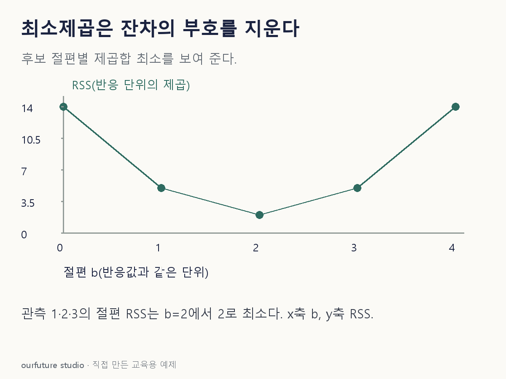

조건을 바꾸며 확인하기
절편만 있는 비가중 최소제곱의 훈련 RSS다. 예측 성능 실험이 아니다.
설명 그림과 비교하기
아래 그림과 표는 고정된 설명 예제입니다. 기본·변형 중 어떤 조건인지 캡션을 읽고, 바꾼 입력의 결과는 계산 칸에서 확인하세요.

같은 문제를 직접 골라 보기
관측값 1·2·3에 절편 b만 있는 모형을 보통 최소제곱으로 적합한다.
조건을 더 바꾸면?
세 관측 모두에 2를 더해 3·4·5로 바꾸면 적합 절편과 RSS는?
변형 풀이 확인
b=4, RSS=2.
평균은 2만큼 이동하지만 평균으로부터의 편차 −1,0,1은 그대로다.
잔차를 더하지 말고, 제곱해서 더한다.